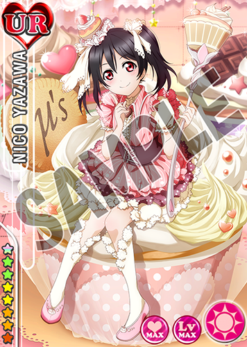

- 第二回転入生総選挙ご褒美イラスト＆御礼メッセージ公開！ 2015.08.21
ユーザー数全世界1500万人＆国内1000万人突破記念キャンペーンとして実施した「第二回転入生総選挙」の結果、
見事1～3位に輝いた3人のご褒美イラストとみなさまへの御礼のメッセージをゲーム内で公開しました。
アプリにログインして「お知らせ」をご覧ください。また、こちらのご褒美イラストを使用した特製壁紙をご用意しました。
お手持ちのスマートフォンやタブレットで是非ご利用ください♪※3種類のサイズをご用意しましたが、すべてのスマートフォン端末に対応しているわけではございませんのでご了承くださいませ。
記載のスマートフォン以外でもご使用いただけます。■iPhone5用（640×1136）
■iPhone5 iOS7以降用（744×1392）
■Android その他用（2160×1920）


{kind=link}
{kind=link}
{kind=link}
- 夏の大型アップデート実施！ 2015.08.04
-
本日、2015年8月3日（月）に大型アップデートを実施しました！
※アプリを起動する際、App StoreまたはGoogle Playより最新バージョンのアプリをダウンロードしていただく必要があります
※このアップデートは今年の6月に開催された「スクフェス感謝祭2015」にてユーザー数全世界1500万人＆国内1000万人突破記念のキャンペーンとして発表したものとなります
リリースから2年が経過した「スクフェス」。
全てのユーザーのみなさまに、さらなるワクワクをお届けするための新機能をご紹介いたします！
■「シールSHOP」実装！
R以上のレアリティの部員（※）を転部させた時や、練習相手に選んだ時に手に入る「シール」を集めて部員やアイテムと交換しよう！手に入れられなかった先行配信の部員や、欲しかったあの部員が入手できるチャンス！
※シリアルコードで入手した部員やアルパカなどのサポートメンバーを除く
■ホーム画面一新！楽しい新機能が登場！

※画面は開発中のものです。
①称号
特定の条件を達成することで手に入る「称号」を自分のプロフィールの一部として設定できるようになります。課題をクリアすることでもらえる称号もあるので、お楽しみに！
②課題
2周年記念キャンペーンとしてお伝えしていた新機能がついに実装。
与えられた課題をクリアすると報酬がもらえます！
※今回のアップデートによりアルバム報酬は課題に統合されます。
③背景
特定の条件を達成することで手に入る「背景」をホーム画面の背景として設定できるようになります。
ストーリーやライブの背景など、お好みに合わせてイメージチェンジしてくださいね！
これからもスクフェスをよろしくお願いいたします。
{kind=link}
- 【本日発売】電撃G’sマガジン9月号付録に限定SR矢澤にこシリアルコード！ 2015.07.30
本日、7月30日発売の『電撃Ｇ’sマガジン9月号』には、
付録としてスクフェスの限定SRが手に入るシリアルコードがついています！是非、チェックしてくださいね！
『電撃Ｇ’sマガジン9月号』付録の覚醒済みSR矢澤にこ
≪ラブライブ！スクールアイドルフェスティバル シリアルコードに関する注意事項≫
●シリアルコードの入力は、1回限りになります。
●特典アイテムの取得は、1アカウントにつき1回のみになります。
●シリアルコードの有効期限は 2015年9月29日 17:00です。
●お手持ちのスマートフォンにアプリをインストールの上ご利用ください。
●有効期限までにアプリの配信が開始されている端末でのみご利用いただけます。
●本シリアルコードで入手できるアイテムは、予告なく変更する可能性がございます。
また、やむを得ない事情により、本シリアルコードによるアイテムの配布を中止する場合があります。
{kind=link}
- 国内ユーザー数1100万人突破記念キャンペーンのお知らせ！ 2015.07.16
いつもスクフェスで遊んでいただきありがとうございます。
この度、2015年7月13日（月）にスクフェスのユーザー数が国内で1100万人を突破しました！
これを記念して、7月21日（火）より7日間、
特別ログインボーナスとしてラブカストーンを毎日1個、計7個プレゼントいたします。これからもスクフェスをよろしくお願いいたします。
{kind=link}
- 「ラブライブ！スクールアイドルフェスティバル」の 公式イラスト集第二弾、本日発売！ 2015.06.30
【ラブライブ！スクールアイドルフェスティバル official illustration book2】
スクフェスのUR/SRイラストをたっぷり280点以上収録した、公式イラスト集第二弾が発売となりました。
2枚並べて「繋がるUR」はもちろん、1枚のイラストとして収録しています！本書限定の覚醒済みUR矢澤にこのシリアルコードもついてきます！
絆をMAXにすれば録りおろしのフルボイスオリジナルサイドストーリーも楽しめますよ♪全国の書店やアニメショップでお求め下さい！
【ＤＡＴＡ】
■ラブライブ！スクールアイドルフェスティバル official illustration book2
■2015年6月30日発売 ■定価：2000円+税
■発行：株式会社KADOKAWA アスキー・メディアワークス
{kind=link}
- 全国のTCGステーション、ブシロードストアにて「SRアルパカ」シリアルコード付きステッカーをプレゼント！ 2015.06.24
『スクフェス感謝祭2015』大成功など、 皆様の多大なご愛顧に感謝致しまして
「SRアルパカ」シリアルコード付きステッカーを 全国のTCGステーション、
ブシロードストアにてお買いものをされた方にプレゼント！
「SRアルパカ」を入手できるシリアルコードが裏面に印字されたカードサイズステッカーです！
※シリアルコードの期限は6/30（火）までとなっておりますので、ご注意下さい。
※1アカウントにつき1回のみ使用可能です。
「スクフェス感謝祭2015」来場者特典のシリアルコードより【SRアルパカ】を入手済みの場合、新規に取得することはできません。
※数に限りがございます。各店舗ごとに、なくなり次第配布終了となりますのでご了承ください。【期間】
6/25(木)～6/28(日）（無くなり次第終了)
※カードラボ札幌店内 TCGステーション、ファイヤーボール あるあるcity店内 ＴＣＧステーションのみ
6月26日(金)開始となります。ご了承下さい。
【配布条件】
1会計ごとに1枚プレゼント。
- 【スクフェス感謝祭2015】会場物販にて「ラブライブ！スタックマグ＋布コースター」をご購入いただいたお客様へお詫びとご案内 2015.06.18
【スクフェス感謝祭2015】会場物販にて「ラブライブ！スタックマグ＋布コースター」をご購入いただいたお客様へお詫びとご案内です。
2015年6月6日(土)～7日(日)に、
池袋サンシャインシティにて開催されました【スクフェス感謝祭2015】の会場物販において、
「ラブライブ！スタックマグ＋布コースター」3種を誤った金額で販売しておりました。
大変申し訳ございません。該当商品をご購入いただきましたお客様へ過剰相当分の返金を申し上げたく、
大変お手数をおかけいたしますがご連絡を頂戴したくご案内申し上げます。この度は、私共の不備でお客様にお手数をおかけいたしますことをお詫び申し上げますとともに、
今後このようなことが起こらぬよう努めてまいります。—
■対象商品
「ラブライブ！スタックマグ＋布コースター Printemps」
「ラブライブ！スタックマグ＋布コースター BiBi」
「ラブライブ！スタックマグ＋布コースター lily white」■正しい価格：1,000円
誤った価格：1,500円■返金について
該当商品のレシートを 株式会社ブシロードミュージック（下記住所） までお送りください。
到着次第ご連絡申しあげますので、
【ご連絡先お電話番号、ご住所、お名前】を合わせてお送り下さい。レシートを紛失された方については、
以下連絡先までお電話にてご連絡をお願い致します。株式会社ブシロードミュージック「ラブライブ！スタックマグ＋布コースター 係」
住所：東京都中野区中央1-38-1 住友中野坂上ビル６F
電話：03-5386-7431 (土日祝日除く平日10:00~12:00/13:00~18:00)
Mail：hibiki-ec@hibiki-radio.jp
- スクフェス勧誘ポストカードのLOVELIVE! Collaboration SHOPでの特別販売が決定！ 2015.06.16
「スクフェス感謝祭2015」記念グッズ
『ラブライブ！ スクフェス勧誘ポストカード「特待生＆一般生」』の
LOVELIVE! Collaboration SHOPでの特別販売が決定しました！スクフェス感謝祭2015で展示された等身大アルパカ人形、
特別仕様のプリントシール機もあわせて展開しております！この機会に是非LOVELIVE! Collaboration SHOPにお越しください♪
※6/17(水)からの販売を予定しております
※数に限りがございますので品切れの際はご了承ください
- ヴァイスシュヴァルツ「ラブライブ！ feat.スクールアイドルフェスティバル Vol.2」特典R公開 2015.06.15
好評発売中のヴァイスシュヴァルツブースターパック「ラブライブ！ feat.スクールアイドルフェスティバル Vol.2」に
ボックス特典として、スクフェスのRカード（先行配信）のシリアルコードが封入されています！
Rカードは９種あり、そのうち３種ずつがランダムで封入されます。
完全新作劇場版「ラブライブ！The School Idol Movie」の描き下ろしイラストを使用！※1ボックスにつき1つのシリアルコードが封入されます。
※1つのシリアルコードでメンバー3人分（3枚）のカードが入手できます。
※シリアルコードの記載されているチラシにはA～Cの3種類があり、
1ボックスにつき1枚、いずれかがランダムで封入されます。
※チラシにはそのシリアルコードでどのメンバーのカードが入手できるか記載されます。
※シリアルコードをご利用いただくには対応のスマートフォンで
「ラブライブ！スクールアイドルフェスティバル」をダウンロードする必要があります。
※シリアルコードの入力には期限がありますのでご注意ください。商品について、詳しくはヴァイスシュヴァルツ公式ホームページをご覧ください。
{kind=link}
{kind=link}
{kind=link}
- ユーザー数全世界1500万人＆国内1000万人突破記念キャンペーンのお知らせ！ 2015.06.06
『ラブライブ！スクールアイドルフェスティバル』のユーザー数が、
2015年5月30日（土）に全世界で1500万人、
6月2日（火）に日本国内で1000万人を突破したことをお知らせいたします。
また、これを記念して各種キャンペーンを実施いたします。■キャンペーン第一弾！
6月16日（火）より7日間、全てのお客様に感謝の気持ちを込めて、
ラブカストーンや勧誘チケットなどを特別ログインボーナスとしてプレゼントいたします。■キャンペーン第二弾！
「Dancing stars on me!」の衣装の新規Rカード9枚を
「特待生勧誘」及び「一般生勧誘」に追加いたします。【追加カード】
R高坂穂乃果、R絢瀬絵里、R南ことり
R園田海未、R星空凛、R西木野真姫
R東條希、R小泉花陽、R矢澤にこ【衣装】
（通常）「ラブライブ！」TVアニメ2期第6話部活風衣装
（覚醒）「Dancing stars on me!」衣装追加の時期や詳細は追って発表いたします。
■キャンペーン第三弾！
投票イベント「真夏のフルーツガール決定戦」開催！
μ’sメンバーとフルーツの組み合わせに投票していただき、
上位1名のメンバーをそのフルーツをイメージした衣装でカード化します！投票期間：6月15日（月）16時～ 7月15日（水）15時
結果発表：8月5日（水）予定こちらの特別カードは、後日お知らせするキャンペーン期間中にログインボーナスとして配布予定です。
詳細は追ってゲーム内でお知らせいたします。さらに、同時開催！「第二回転入生総選挙」！
応援したい転入生（μ’s以外の全部員）を3人選んで投票していただき、上位9人を決定します。
上位3人は記念イラストを描きおろし、スマホ用壁紙として後日配布いたします。■キャンペーン第四弾！
「シールSHOP」実装決定！
R以上のレアリティの部員（※）を転部させた時や、練習相手に選んだ時に手に入る「シール」を集めて、部員やアイテムと交換しよう！
※シリアルコードで入手した部員やアルパカなどのサポートメンバーを除く実装時期など詳細は追ってゲーム内でお知らせいたします。
※5月30日（土）からシールSHOP実装までの間に行われた転部や練習につきましても、さかのぼって計算し、実装時にシールをまとめて配布いたします■キャンペーン第五弾！
ホーム画面一新！楽しい新機能も続々登場！①称号
特定の条件を達成することで手に入る「称号」を自分のプロフィールの一部として設定
できるようになります。どんな称号があるのかは、お楽しみに！②課題
2周年記念キャンペーンとしてお伝えしていた新機能がついに実装。
与えられた課題をクリアすると報酬がもらえます！③背景
特定の条件を達成することで手に入る「背景」をホーム画面の背景として設定できるよ
うになります。お好みに合わせてイメージチェンジしてくださいね！実装時期など詳細は追ってゲーム内でお知らせいたします。
■キャンペーン第六弾！
スクフェスのための書き下ろし新曲制作決定！
「タカラモノズ／Paradise Live」、ユニットコラボ楽曲に続く、スクフェスのための書
き下ろしシリーズ第三弾！！実装時期など詳細は追ってゲーム内でお知らせいたします。
これからも、「ラブライブ！スクールアイドルフェスティバル」をよろしくお願いいたします。
{kind=link}
- 『ラブライブ！The School Idol Movie』入場者プレゼントでスクフェスの限定SRをゲット！ 2015.05.30
完全新作劇場版『ラブライブ！The School Idol Movie』の入場者プレゼントに、
同時封入特典としてスクフェスの「描き下ろし限定覚醒済みSR」が入手できるシリアルコードの封入が決定しました！
数量限定にて劇場への来場者にプレゼントいたします。『ラブライブ！The School Idol Movie』限定の描きおろし覚醒済みSRです。
各週替り特典に封入されています。（週替り特典や上映劇場について、詳しくはラブライブ！公式ホームページをご覧ください）
高坂穂乃果、絢瀬絵里、南ことり、園田海未、星空 凛、西木野真姫、東條 希、小泉花陽、矢澤にこ全９種よりランダムで１種配布。
有効期限：2015年12月31日23時59分まで●シリアルコードの入力は、１回限りになります。
●お手持ちのスマートフォンにアプリをインストールの上ご利用ください。
●有効期限までにアプリの配信が開始されている端末でのみご利用いただけます。
●本シリアルコードで入手できるアイテムは、予告なく変更する可能性がございます。
またやむを得ない事情により、本シリアルコードによるアイテムの配布を中止する場合があります。
{kind=link}
- official illustration book2は覚醒済みUR矢澤にこのシリアルコード付き♪ 2015.05.27
スクフェス公式イラスト集の第2弾
『ラブライブ！スクールアイドルフェスティバル official illustration book2』は、
特典として覚醒済みUR矢澤にこのシリアルコード付き♪覚醒済みだから、ライブをして絆をMAXにすれば、録りおろしのフルボイスオリジナルサイドストーリーが楽しめます♪
■ラブライブ！スクールアイドルフェスティバル official illustration book2
■2015年6月30日発売 ※発売日が変更になりました
■定価：2000円+税
■発行：株式会社KADOKAWA アスキー・メディアワークス
- ユーザー数900万人突破記念キャンペーンのお知らせ！ 2015.04.28
いつもスクフェスで遊んでいただきありがとうございます。
この度、2015年4月22日（水）にスクフェスのユーザー数が国内で900万人を突破しました！
これを記念して、5月1日（金）より7日間、
特別ログインボーナスとしてラブカストーンを毎日1個、計7個プレゼントいたします。これからもスクフェスをよろしくお願いいたします。
{kind=link}
- Tカード（ラブライブ！デザイン）の交換特典にスクフェスの先行配信Rが登場！ 2015.04.24
Tカード（ラブライブ！デザイン）でTポイントを貯めて交換できる特典に、
先行配信の「高坂穂乃果」、「南ことり」、「園田海未」の覚醒済みRが登場！●Tポイント交換受付期間：2015年5月12日（火）15：00～10月29日（木）23:59まで
●シリアルコード有効期限：2015年11月30日（月）23:59まで
●交換対象：「覚醒済みR高坂穂乃果」、「覚醒済みR南ことり」、「覚醒済みR園田海未」詳しくは Tカード（ラブライブ！デザイン）特設サイトをご覧ください。
{kind=link}
{kind=link}
- 【4/24(金)販売開始】ゲーム内アイテム付きムビチケオンライン前売券 2015.04.23
スクフェスで「ラブライブ！The School Idol Movie」前売券を購入して、特製アイテムセットをもらおう♪
6月13日より全国ロードショーとなる完全新作劇場版「ラブライブ！The School Idol Movie」の
『ゲーム内アイテム付きムビチケオンライン前売券』が4/24(金)より販売開始となります！通常前売券と同じ1,500円で、スクフェスで使える「勧誘チケット」などのアイテムがついてくるお得な前売券です♪
ムビチケオンライン前売券なら提携劇場のWEBサイトで事前の座席予約も可能です！（詳しくはこちらをご覧ください）・販売期間
2015年4月24日(金)12:00〜6月12日(金)23:50・販売価格
1,500円（税込）・特典「劇場版特別セット」シリアルコードで入手できるゲーム内アイテム
【勧誘チケット×1】
【アルパカ（白）×1】
【アルパカ（茶）×1】
【友情ポイント×3,000pt】
【G×300,000】・購入方法
「ラブライブ！スクールアイドルフェスティバル」アプリ内の「お知らせ」より購入ページにお進みください。※ムビチケオンライン前売券は紙の前売券ではありません。オンラインで購入し、メールで購入番号が届く電子前売券です。ムビチケオンライン前売券について詳しくはこちらをご覧ください。
※「ラブライブ！The School Idol Movie」のムビチケオンライン前売券はアプリからのみ購入可能です。
※ムビチケオンライン前売券の購入は1アカウントにつき1回までです。（1回の購入でオンライン前売券は10枚まで購入できますが、前売券の購入枚数によらず入手できるシリアルコードは1つとなります）
※ムビチケオンライン前売券の購入完了メールに記載されるシリアルコードをアプリ内で入力すると、上記アイテムが付与されます。（アプリ内「その他」メニュー「シリアルコード」ページよりシリアルコードを入力してください）
※シリアルコードの有効期限は2015年6月30日23:59です。
※「劇場版特別セット」のシリアルコードはスクフェスの1ユーザーアカウントにつき1回のみ使用できます。©2015 プロジェクトラブライブ！ムービー
{kind=link}
- スクフェス2周年記念キャンペーンのお知らせ！ 2015.04.08
2013年4月15日に配信を開始した「ラブライブ！スクールアイドルフェスティバル」は、まもなく2周年を迎えます！
これを記念して各種キャンペーンの実施が決定しました！これからもどうぞスクフェスをよろしくお願いいたします。
スクフェス2周年記念キャンペーン
■第一弾
4月16日（木）より7日間、全てのお客様に感謝を込めて、
特別ログインボーナスとしてラブカストーンを毎日1個、最大計7個プレゼントいたします。■第二弾
TVアニメ2期Blu-ray特装限定版 特典CD収録曲の配信が決定しました。
2015年6月以降にイベント先行配信曲・通常配信曲として順次配信予定です。
配信時期など、詳細は追ってゲーム内でお知らせいたします。
【配信予定曲】
シアワセ行きのSMILING!（歌：高坂穂乃果）
ずるいよMagnetic today（歌：西木野真姫・矢澤にこ）
くるりんMIRACLE（歌：星空 凛）
Storm in Lover（歌：園田海未・絢瀬絵里）
もしもからきっと（歌：東條 希）
好きですが好きですか？（歌：南ことり・小泉花陽）
そして最後のページには（歌：μ’s）
■第三弾
「School idol diary」シリーズとのコラボイベント第二弾の配信が決定しました。
株式会社KADOKAWAより発売中のノベル「ラブライブ！ School idol diaryシリーズより、各メンバーの人気エピソードをスクフェス用にシナリオ書き下ろし。
一定のイベントptを貯めるごとにストーリーの続きが解放されるようになるイベントです。
配信時期など、詳細は追ってゲーム内でお知らせいたします。
■第四弾
ラブライブ！スクールアイドルフェスティバル公式イラスト本第二弾の発売が決定しました。
株式会社KADOKAWAより5月末に発売予定です。
■第五弾
『課題』機能が新登場！
与えられた課題をクリアするごとに報酬がもらえる、スクフェスの楽しみ方がますます広がる新機能の実装が決定しました。
開始時期など、詳細は追ってゲーム内でお知らせいたします。
新規Rカード追加
ユーザー数国内700万人突破キャンペーン第二弾としてお伝えしておりました
「Music S.T.A.R.T!!」の衣装の新規Rカード9枚につきまして、4月15日（水）16時より「特待生勧誘」及び「一般生勧誘」に追加いたします。
【追加カード】
R高坂穂乃果
R絢瀬絵里
R南ことり
R園田海未
R星空凛
R西木野真姫
R東條希
R小泉花陽
R矢澤にこ
【衣装】
（通常）「ラブライブ！」TVアニメ2期 第2話私服 ⇒ （覚醒）「Music S.T.A.R.T!!」衣装


期間限定！東條希URをゲットしよう♪
ユーザー数全世界1000万人突破を記念して世界共通で開催された投票イベント『あなたと行きたい♪旅ガール決定戦』の結果、
ユーザー投票により見事1位に輝いた「東條希ちゃんとラスベガスに行きたい♪」の覚醒済みURプレゼントの詳細が決定しました。すべてのユーザー様を対象に、4月21日（火）0時～5月31日（日）24時の期間中合計5日間ログインするだけで入手可能となります。
ここでしか手に入らない貴重なURを是非手に入れてくださいね！
※入手はお一人様1回限りになります
※日本語版以外の各言語版での配布につきましては追ってそれぞれのゲーム内にて告知いたします
{kind=link}
{kind=link}
- ヴァイスシュヴァルツ 『ラブライブ！ feat.スクールアイドルフェスティバル』新商品発売決定！ 2015.03.17
ヴァイスシュヴァルツ『ラブブライブ！feat.スクールアイドルフェスティバル』
トライアルデッキとブースターパックVol.2の発売が決定しました！ブースターパックには初回生産ボックス特典としてスクフェスの先行R3枚がもらえるシリアルコードも封入されます！
■ヴァイスシュヴァルツ トライアルデッキ ラブライブ！feat.スクールアイドルフェスティバル
発売日：2015年6月13日(土)
1個 1,238円＋税
1ボックス（6個入り） 7,428円＋税
カード50枚入り構築済みデッキ（デッキ内容は固定）
クイックマニュアル・デッキ解説書・プレイブック・プレイマット同梱■ヴァイスシュヴァルツ ブースターパック ラブライブ！feat.スクールアイドルフェスティバル Vol.2
発売日：2015年6月13日(土)
1パック（カード8枚入り） 希望小売価格 314円＋税
1ボックス（20パック入り） 6,280円＋税
・ボックス特典
「ラブライブ！スクールアイドルフェスティバル」のRカード（先行配信）のシリアルコードを封入！
Rカードは9種あり、そのうち3種ずつがランダムで封入されます。
劇場版アニメ「ラブライブ！The School Idol Movie」のイラストを使用！≪ラブライブ！スクールアイドルフェスティバル シリアルコードに関する注意事項≫
●1つのシリアルコードでメンバー3人分（3枚）のカードが入手できます
●シリアルコードの記載されているチラシにはA～Cの3種類があり、1ボックスにつき1枚、いずれかがランダムで封入されます
●チラシにはそのシリアルコードでどのメンバーのカードが入手できるか記載されます
●シリアルコードの入力は、1回限りになります。
●シリアルコードには有効期限があります。
●お手持ちのスマートフォンにアプリをインストールの上ご利用ください。
●有効期限までにアプリの配信が開始されている端末でのみご利用いただけます。
●本シリアルコードで入手できるアイテムは、予告なく変更する可能性がございます。また、やむを得ない事情により、本シリアルコードによるアイテムの配布を中止する場合があります。ヴァイスシュヴァルツの詳しい情報はこちら！
http://ws-tcg.com/
{kind=link}
- 『ラブライブ！モバイルポーチ付き劇場版通常前売券』に限定「UR矢澤にこ」シリアルコード封入！[3/10更新] 2015.03.05
ブシロードより発売の『ラブライブ！モバイルポーチ付き劇場版通常前売券』に
スクフェスの限定シリアルコード「覚醒済みUR 矢澤にこ」が封入されます！
▲限定シリアルコードで入手できる『覚醒済みUR 矢澤にこ』【価格】
3,000円（税込）【内容】
・モバイルポーチ×1
・「ラブライブ！The School Idol Movie」通常前売券×1
・「ラブライブ！スクールアイドルフェスティバル」限定シリアルコード『覚醒済みUR 矢澤にこ』×1【販売場所】
・「AnimeJapan 2015」ブシロードブース（詳細はリンク先をご覧ください）
・HiBiKi EC SHOP!期間限定通販（3月13日（金）13:00まで） ※好評につき期間を延長しました
「ラブライブ！The School Idol Movie」の詳細や上映館につきましてはラブライブ！公式ホームページをご確認ください。
{kind=link}
{kind=link}
- ユーザー数800万人突破記念キャンペーンのお知らせ！ 2015.02.25
いつもスクフェスで遊んでいただきありがとうございます。
この度、2015年2月22日（日）にスクフェスのユーザー数が国内で800万人を突破しました！
これを記念して、3月1日（日）より7日間、
特別ログインボーナスとしてラブカストーンを毎日1個、計7個プレゼントいたします。これからもスクフェスをよろしくお願いいたします。
{kind=link}
- ユーザー数700万人突破記念キャンペーンのお知らせ！ 2015.01.23
いつもスクフェスで遊んでいただきありがとうございます。
この度、2015年1月19日（月）にスクフェスのユーザー数が国内で700万人を突破しました！

これを記念して、以下のキャンペーンを実施いたします。
※詳細はアプリ内のお知らせでもご確認いただけます。■第一弾
2月1日（日）より7日間、特別ログインボーナスとしてラブカストーンを毎日1個、計7個プレゼントいたします。
■第二弾
「Music S.T.A.R.T!!」の衣装の新規Rカード9枚を「特待生勧誘」及び「一般生勧誘」に追加いたします。
【追加カード】
R高坂穂乃果、R絢瀬絵里、R南ことり、R園田海未、R星空凛、R西木野真姫、R東條希、R小泉花陽、R矢澤にこ【衣装】
（通常）私服 ⇒ （覚醒）「Music S.T.A.R.T!!」衣装
追加の時期や詳細は追って発表いたしますので、楽しみにお待ちください。
これからもスクフェスをよろしくお願いいたします。